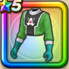

ポップの服上
攻略班 7.5点 / バギ属性耐性+5%イオ属性耐性+5%バギ属性耐性+5%イオ属性耐性+5%魔王ハドラーへのダメージ+10%【賢者】じゅもんダメージ+3%
くわしい特徴
【レベル別習得スキル】 Lv1バギ属性耐性+5% Lv5魔王ハドラーへのダメージ+10% Lv8すばやさ+5 Lv10イオ属性耐性+5% Lv12【賢者】じゅもんダメージ+3% Lv15魔力の暴走率+3% Lv18バギ属性耐性+5% Lv20【賢者】さいだいHP+5 Lv23守備力+7 Lv25イオ属性耐性+5% 【限界突破スキル】 1凸こうげき魔力+5 2凸すばやさ+7 3凸守備力+5 4凸さいだいMP+10